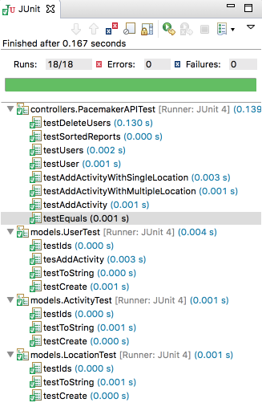
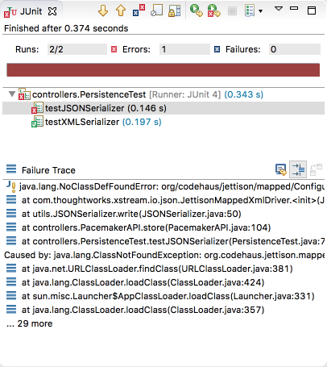

Complete the pacemaker assignment solution.
Create a new package called controllers, and introduce this first version if the API:
import java.util.ArrayList;
import java.util.Collection;
import java.util.HashMap;
import java.util.List;
import java.util.Map;
import com.google.common.base.Optional;
import models.Activity;
import models.Location;
import models.User;
import org.joda.time.DateTimeComparator;
public class PacemakerAPI {
private Map<String, User> emailIndex = new HashMap<>();
private Map<String, User> userIndex = new HashMap<>();
private Map<String, Activity> activitiesIndex = new HashMap<>();
public PacemakerAPI() {}
public Collection<User> getUsers() {
return userIndex.values();
}
public void deleteUsers() {
userIndex.clear();
emailIndex.clear();
}
public User createUser(String firstName, String lastName, String email, String password) {
User user = new User(firstName, lastName, email, password);
emailIndex.put(email, user);
userIndex.put(user.id, user);
return user;
}
public Activity createActivity(String id, String type, String location, double distance,
String starttime, String duration) {
Activity activity = null;
Optional<User> user = Optional.fromNullable(userIndex.get(id));
if (user.isPresent()) {
activity = new Activity(type, location, distance, starttime, duration);
user.get().activities.put(activity.id, activity);
activitiesIndex.put(activity.id, activity);
}
return activity;
}
public Activity getActivity(String id) {
return activitiesIndex.get(id);
}
public Collection<Activity> getActivities(String id) {
Collection<Activity> activities = null;
Optional<User> user = Optional.fromNullable(userIndex.get(id));
if (user.isPresent()) {
activities = user.get().activities.values();
}
return activities;
}
public List<Activity> listActivities(String userId, String sortBy) {
return null;
}
public void addLocation(String id, double latitude, double longitude) {
Optional<Activity> activity = Optional.fromNullable(activitiesIndex.get(id));
if (activity.isPresent()) {
activity.get().route.add(new Location(latitude, longitude));
}
}
public User getUserByEmail(String email) {
return emailIndex.get(email);
}
public User getUser(String id) {
return userIndex.get(id);
}
public User deleteUser(String id) {
User user = userIndex.remove(id);
return emailIndex.remove(user.email);
}
}This does not include the serialization support, or the more advanced activity reports.
This the corresponding test - which should be created in the src/test/controllers package:
package controllers;
import static org.junit.Assert.*;
import java.util.List;
import org.joda.time.DateTimeComparator;
import org.junit.After;
import org.junit.Before;
import org.junit.Test;
import models.Activity;
import models.Location;
import models.User;
import static utils.TimeFormatters.parseDateTime;
import static utils.TimeFormatters.parseDuration;
import static models.Fixtures.users;
import static models.Fixtures.activities;
import static models.Fixtures.locations;
import static models.Fixtures.margeActivities;
public class PacemakerAPITest {
private PacemakerAPI pacemaker;
void assertEquivalent(List<Activity> list1, List<Activity> list2) {
assertEquals(list1.size(), list1.size());
int index = 0;
for (Activity activity : list1) {
assertEquals(activity.location, list2.get(index).location);
index++;
}
}
@Before
public void setup() {
pacemaker = new PacemakerAPI();
users.forEach(
user -> pacemaker.createUser(user.firstName, user.lastName, user.email, user.password));
}
@After
public void tearDown() {
pacemaker = null;
}
@Test
public void testUser() {
assertEquals(users.size(), pacemaker.getUsers().size());
pacemaker.createUser("homer", "simpson", "homer@simpson.com", "secret");
assertEquals(users.size() + 1, pacemaker.getUsers().size());
assertEquals(users.get(0), pacemaker.getUserByEmail(users.get(0).email));
}
@Test
public void testEquals() {
User homer = new User("homer", "simpson", "homer@simpson.com", "secret");
User homer2 = new User("homer", "simpson", "homer@simpson.com", "secret");
User bart = new User("bart", "simpson", "bartr@simpson.com", "secret");
assertEquals(homer, homer);
assertEquals(homer, homer2);
assertNotEquals(homer, bart);
assertSame(homer, homer);
assertNotSame(homer, homer2);
}
@Test
public void testUsers() {
assertEquals(users.size(), pacemaker.getUsers().size());
users.forEach(user -> {
User eachUser = pacemaker.getUserByEmail(user.email);
assertEquals(user, eachUser);
assertNotSame(user, eachUser);
});
}
@Test
public void testDeleteUsers() {
assertEquals(users.size(), pacemaker.getUsers().size());
User marge = pacemaker.getUserByEmail("marge@simpson.com");
pacemaker.deleteUser(marge.id);
assertEquals(users.size() - 1, pacemaker.getUsers().size());
}
@Test
public void testAddActivity() {
User marge = pacemaker.getUserByEmail("marge@simpson.com");
Activity testActivity = margeActivities.get(0);
Activity activity = pacemaker
.createActivity(marge.id, testActivity.type, testActivity.location, testActivity.distance,
parseDateTime(testActivity.starttime), parseDuration(testActivity.duration));
Activity returnedActivity = pacemaker.getActivity(activity.id);
assertEquals(activities.get(0), returnedActivity);
assertNotSame(activities.get(0), returnedActivity);
}
@Test
public void testAddActivityWithSingleLocation() {
User marge = pacemaker.getUserByEmail("marge@simpson.com");
Activity testActivity = margeActivities.get(0);
String activityId = pacemaker
.createActivity(marge.id, testActivity.type, testActivity.location, testActivity.distance,
parseDateTime(testActivity.starttime), parseDuration(testActivity.duration)).id;
pacemaker.addLocation(activityId, locations.get(0).latitude, locations.get(0).longitude);
Activity activity = pacemaker.getActivity(activityId);
assertEquals(1, activity.route.size());
assertEquals(0.0001, locations.get(0).latitude, activity.route.get(0).latitude);
assertEquals(0.0001, locations.get(0).longitude, activity.route.get(0).longitude);
}
@Test
public void testAddActivityWithMultipleLocation() {
User marge = pacemaker.getUserByEmail("marge@simpson.com");
Activity testActivity = margeActivities.get(0);
String activityId = pacemaker
.createActivity(marge.id, testActivity.type, testActivity.location, testActivity.distance,
parseDateTime(testActivity.starttime), parseDuration(testActivity.duration)).id;
locations.forEach(
location -> pacemaker.addLocation(activityId, location.latitude, location.longitude));
Activity activity = pacemaker.getActivity(activityId);
assertEquals(locations.size(), activity.route.size());
int i = 0;
for (Location location : activity.route) {
assertEquals(location, locations.get(i));
i++;
}
}
@Test
public void testSortedReports() {
}
}Add the following fixtures to the 'models/Fixtures' class:
public static List<Activity> margeActivities =
new ArrayList<>(Arrays.asList(activities.get(0), activities.get(1)));
public static List<Activity> lisasActivities =
new ArrayList<>(Arrays.asList(activities.get(2), activities.get(3)));
public static List<Location> route1 =
new ArrayList<>(Arrays.asList(locations.get(0), locations.get(1)));
public static List<Location> route2 =
new ArrayList<>(Arrays.asList(locations.get(2), locations.get(3)));
public static List<Activity> activitiesSortedByType =
new ArrayList<>(Arrays.asList(activities.get(4), activities.get(2), activities.get(1),
activities.get(0), activities.get(3)));The new tests should pass - along with all of the others:

We now have a substantial body of test, which can give us the confidence (and a safety net) as we proceed to implement the remaining features.
This is the Serializer interface we have to model the persistence mechanism:
package utils;
public interface Serializer {
void push(Object o);
Object pop();
void write() throws Exception;
void read() throws Exception;
}Place this interface in the utils package. We can implement this class to support XML Serialization:
package utils;
import com.thoughtworks.xstream.XStream;
import com.thoughtworks.xstream.io.xml.DomDriver;
import java.io.File;
import java.io.FileReader;
import java.io.FileWriter;
import java.io.ObjectInputStream;
import java.io.ObjectOutputStream;
import java.util.Stack;
public class XMLSerializer implements Serializer {
private Stack stack = new Stack();
private File file;
public XMLSerializer(File file) {
this.file = file;
}
public void push(Object o) {
stack.push(o);
}
public Object pop() {
return stack.pop();
}
@SuppressWarnings("unchecked")
public void read() throws Exception {
ObjectInputStream is = null;
try {
XStream xstream = new XStream(new DomDriver());
is = xstream.createObjectInputStream(new FileReader(file));
stack = (Stack) is.readObject();
} finally {
if (is != null) {
is.close();
}
}
}
public void write() throws Exception {
ObjectOutputStream os = null;
try {
XStream xstream = new XStream(new DomDriver());
os = xstream.createObjectOutputStream(new FileWriter(file));
os.writeObject(stack);
} finally {
if (os != null) {
os.close();
}
}
}
}This will not compile, as we have not included our xml serialization component. Bring this into maven now:
<dependency>
<groupId>com.thoughtworks.xstream</groupId>
<artifactId>xstream</artifactId>
<version>1.4.10</version>
</dependency>This should compile successfully now.
Now introduce a serializer into our PacemakerAPI class:
public Serializer serializer;
public PacemakerAPI(Serializer serializer) {
this.serializer = serializer;
}(This will require an import - use Eclipse autocorrect to fix this).
This will have broken our unit tests - which we should fix before proceeding :
@Before
public void setup() {
pacemaker = new PacemakerAPI(null);
users.forEach(
user -> pacemaker.createUser(user.firstName, user.lastName, user.email, user.password));
}We can now implement our load/store methods in PacemakerAPI
@SuppressWarnings("unchecked")
public void load() throws Exception {
serializer.read();
activitiesIndex = (Map<String, Activity>) serializer.pop();
emailIndex = (Map<String, User>) serializer.pop();
userIndex = (Map<String, User>) serializer.pop();
}
public void store() throws Exception {
serializer.push(userIndex);
serializer.push(emailIndex);
serializer.push(activitiesIndex);
serializer.write();
}This is test to exercise the persistence feature, which we can place in src/test/java:
package controllers;
import static org.junit.Assert.*;
import java.io.File;
import org.junit.After;
import org.junit.Before;
import org.junit.Test;
import models.Activity;
import models.User;
import static utils.TimeFormatters.parseDateTime;
import static utils.TimeFormatters.parseDuration;
import utils.Serializer;
import utils.XMLSerializer;
import static models.Fixtures.*;
public class PersistenceTest {
PacemakerAPI pacemaker;
Serializer xmlSerializer;
void deleteFile(String fileName) {
File datastore = new File(fileName);
if (datastore.exists()) {
datastore.delete();
}
}
void populate(PacemakerAPI pacemaker) {
users.forEach(
user -> pacemaker.createUser(user.firstName, user.lastName, user.email, user.password));
User marge = pacemaker.getUserByEmail("marge@simpson.com");
margeActivities.forEach(activity -> {
Activity newActivity = pacemaker.createActivity(marge.id, activity.type, activity.location,
activity.distance, parseDateTime(activity.starttime), parseDuration(activity.duration));
route1.forEach(
location -> pacemaker.addLocation(newActivity.id, location.latitude, location.longitude));
});
User lisa = pacemaker.getUserByEmail("lisa@simpson.com");
lisasActivities.forEach(activity -> {
Activity newActivity = pacemaker.createActivity(lisa.id, activity.type, activity.location,
activity.distance, parseDateTime(activity.starttime), parseDuration(activity.duration));
route2.forEach(
location -> pacemaker.addLocation(newActivity.id, location.latitude, location.longitude));
});
}
@Before
public void setup() {
deleteFile("datastore.xml");
xmlSerializer = new XMLSerializer(new File("datastore.xml"));
deleteFile("datastore.json");
pacemaker = new PacemakerAPI(null);
populate(pacemaker);
}
@After
public void tearDown() {
pacemaker = null;
xmlSerializer = null;
}
@Test
public void testXMLSerializer() throws Exception {
pacemaker.serializer = xmlSerializer;
pacemaker.store();
PacemakerAPI pacemaker2 = new PacemakerAPI(null);
pacemaker2.serializer = xmlSerializer;
pacemaker2.load();
pacemaker.getUsers().forEach(user -> assertTrue(pacemaker2.getUsers().contains(user)));
}
}Although the tests are concise, we are populating the model with a range or users, activities and models in the populate method.
In our main test we are saving this model, reloading it into a different pacemaker instance and checking for equivalence. Look carefully at the testXMLSerializer method, which implements this test.
Also, after each test run we can visually inspect datastore.xml to see this test model in action.
Make sure this test runs, both in Eclipse and in the maven console.
Introduce an alternative version of the Serializer into the utils package, this time to use s JSON driver:
package utils;
import com.thoughtworks.xstream.XStream;
import com.thoughtworks.xstream.io.json.JettisonMappedXmlDriver;
import com.thoughtworks.xstream.io.xml.DomDriver;
import java.io.File;
import java.io.FileReader;
import java.io.FileWriter;
import java.io.ObjectInputStream;
import java.io.ObjectOutputStream;
import java.util.Stack;
public class JSONSerializer implements Serializer {
private Stack stack = new Stack();
private File file;
public JSONSerializer(File file) {
this.file = file;
}
public void push(Object o) {
stack.push(o);
}
public Object pop() {
return stack.pop();
}
@SuppressWarnings("unchecked")
public void read() throws Exception {
ObjectInputStream is = null;
try {
XStream xstream = new XStream(new JettisonMappedXmlDriver());
is = xstream.createObjectInputStream(new FileReader(file));
stack = (Stack) is.readObject();
} finally {
if (is != null) {
is.close();
}
}
}
public void write() throws Exception {
ObjectOutputStream os = null;
try {
XStream xstream = new XStream(new JettisonMappedXmlDriver());
os = xstream.createObjectOutputStream(new FileWriter(file));
os.writeObject(stack);
} finally {
if (os != null) {
os.close();
}
}
}
}We can try the following new test in PersistenceTest:
@Test
public void testJSONSerializer() throws Exception {
Serializer jsonSerializer = new JSONSerializer(new File("datastore.json"));
pacemaker.serializer = jsonSerializer;
pacemaker.store();
PacemakerAPI pacemaker2 = new PacemakerAPI(null);
pacemaker2.serializer = jsonSerializer;
pacemaker2.load();
pacemaker.getUsers().forEach(user -> assertTrue(pacemaker2.getUsers().contains(user)));
}Run the test now. It should fail:

This failure is caused by an exception in the xtsream library - not an assertion failure in our tests. The exception is because one of the upstream dependencies of xstream is not explicitly included into our POM.
Introducing this additional dependency should correct the problem:
<dependency>
<groupId>org.codehaus.jettison</groupId>
<artifactId>jettison</artifactId>
<version>1.3.8</version>
</dependency>The tests should now pass.
One of the features we have yet consider is the listActivities command:
la list-activities (userid, sortBy: type, location, distance, date, duration)This requires activities to be listed sorted by different attributes.
We already have this placeholder method in PacemakerAPI:
public List<Activity> listActivities(String userId, String sortBy) {
return null;
}... and we have a placeholder for a test of this feature:
@Test
public void testSortedReports() {}Devising a test for this is a little more challenging. We already have some activity fixtures we can experiment on:
This fixture is currently in models/Fixtures.java:
public static List<Activity> activities = new ArrayList<>(
Arrays.asList(new Activity("walk", "fridge", 0.001, "10:9:2017 09:00:00", "00:42:20"),
new Activity("walk", "bar", 1.0, "11:9:2017 10:00:00", "00:39:02"),
new Activity("run", "work", 2.2, "12:9:2017 08:00:00", "00:54:23"),
new Activity("walk", "shop", 2.5, "13:9:2017 10:00:00", "00:32:03"),
new Activity("cycle", "school", 4.5, "14:9:2017 11:00:00", "00:47:04")));In our test stub, we can make a start by adding all of these activities to a new user, and requesting the activity list sorted by 'type'
@Test
public void testSortedReports() {
User homer = pacemaker.createUser("homer", "simpson", "homer@simpson.com", "secret");
activities.forEach(
activity -> pacemaker
.createActivity(homer.id, activity.type, activity.location, activity.distance,
parseDateTime(activity.starttime), parseDuration(activity.duration))
);
List<Activity> activities = pacemaker.listActivities(homer.id, "type");There is no test here yet - we are just retrieving the list. Here is a first attempt at a test:
@Test
public void testSortedReports() {
User homer = pacemaker.createUser("homer", "simpson", "homer@simpson.com", "secret");
activities.forEach(
activity -> pacemaker
.createActivity(homer.id, activity.type, activity.location, activity.distance,
parseDateTime(activity.starttime), parseDuration(activity.duration))
);
List<Activity> activities = pacemaker.listActivities(homer.id, "type");
for (int i = 0; i < activities.size() - 1; i++) {
assertTrue(activities.get(i).type.compareTo(activities.get(i + 1).type) <= 0);
}
}Running this test will fail - as we have yet to implement the feature in PacemakerAPI.
Here is a first attempt of the actual code:
public List<Activity> listActivities(String userId, String sortBy) {
List<Activity> activities = new ArrayList<>();
activities.addAll(userIndex.get(userId).activities.values());
switch (sortBy) {
case "type":
activities.sort((a1, a2) -> a1.type.compareTo(a2.type));
break;
}
return activities;
}This test should now pass. If we wanted to test location - we could augment the test as follows:
...
activities = pacemaker.listActivities(homer.id, "location");
for (int i = 0; i < activities.size() - 1; i++) {
assertTrue(activities.get(i).location.compareTo(activities.get(i + 1).location) <= 0);
}
...and the associated implementation of the feature:
case "location":
activities.sort((a1, a2) -> a1.location.compareTo(a2.location));
break;Here is the final version of the listActivity command + its test:
public List<Activity> listActivities(String userId, String sortBy) {
List<Activity> activities = new ArrayList<>();
activities.addAll(userIndex.get(userId).activities.values());
switch (sortBy) {
case "type":
activities.sort((a1, a2) -> a1.type.compareTo(a2.type));
break;
case "location":
activities.sort((a1, a2) -> a1.location.compareTo(a2.location));
break;
case "distance":
activities.sort((a1, a2) -> Double.compare(a1.distance, a2.distance));
break;
case "date":
activities
.sort((a1, a2) -> DateTimeComparator.getInstance().compare(a1.starttime, a2.starttime));
break;
case "duration":
activities
.sort((a1, a2) -> {
if (a1.duration.getStandardSeconds() > a2.duration.getStandardSeconds()) {
return 1;
} else {
return -1;
}
});
break;
}
return activities;
} @Test
public void testSortedReports() {
User homer = pacemaker.createUser("homer", "simpson", "homer@simpson.com", "secret");
activities.forEach(
activity -> pacemaker
.createActivity(homer.id, activity.type, activity.location, activity.distance,
parseDateTime(activity.starttime), parseDuration(activity.duration))
);
List<Activity> activities = pacemaker.listActivities(homer.id, "type");
for (int i = 0; i < activities.size() - 1; i++) {
assertTrue(activities.get(i).type.compareTo(activities.get(i + 1).type) <= 0);
}
activities = pacemaker.listActivities(homer.id, "location");
for (int i = 0; i < activities.size() - 1; i++) {
assertTrue(activities.get(i).location.compareTo(activities.get(i + 1).location) <= 0);
}
activities = pacemaker.listActivities(homer.id, "distance");
for (int i = 0; i < activities.size() - 1; i++) {
assertTrue(activities.get(i).distance <= activities.get(i + 1).distance);
}
activities = pacemaker.listActivities(homer.id, "date");
for (int i = 0; i < activities.size() - 1; i++) {
assertTrue( DateTimeComparator.getInstance().compare(activities.get(i).starttime, activities.get(i+1).starttime) <= 0);
}
activities = pacemaker.listActivities(homer.id, "duration");
for (int i = 0; i < activities.size() - 1; i++) {
assertTrue( activities.get(i).duration.getStandardSeconds() < activities.get(i+1).duration.getStandardSeconds());
}
}Both the feature + the test are a little verbose. It is unlikely we would be able to significantly shorten the feature implementation. However, there may be scope for more creative approaches to simplifying the test, perhaps by using additional pre-sorted fixtures.
Our final step is to include the command line implementation.
First a new utility class to encapsulate our output to the command line:
package utils;
import java.util.Collection;
import models.Activity;
import models.User;
public class Console {
public void println(String s) {
System.out.println(s);
}
public void renderUser(User user) {
System.out.println(user.toString());
}
public void renderUsers(Collection<User> users) {
System.out.println(users.toString());
}
public void renderActivity(Activity activities) {
System.out.println(activities.toString());
}
public void renderActivities(Collection<Activity> activities) {
System.out.println(activities.toString());
}
}This is a special purpose console for our app - which we will customise shortly.
Before we do so, we need to include 2 new maven dependencies:
<dependency>
<groupId>com.googlecode.clichemaven</groupId>
<artifactId>cliche</artifactId>
<version>110413</version>
</dependency>
<dependency>
<groupId>java-ascii-table</groupId>
<artifactId>java-ascii-table</artifactId>
<version>1.0</version>
</dependency>Note that if java-ascii-table is not in the maven repo - we need to have installed them locally in your own maven repository image. This is the jar files here if you do not already have it
If you have this jar files in the current folder, then this maven commands will deposit them in your repository:
mvn install:install-file -Dfile=java-ascii-table-1.0.jar -DgroupId=java-ascii-table -DartifactId=java-ascii-table -Dversion=1.0 -Dpackaging=jarWith these installed, we can bring in another new utility class into the utils package:
package utils;
import com.bethecoder.ascii_table.ASCIITable;
import com.bethecoder.ascii_table.impl.CollectionASCIITableAware;
import com.bethecoder.ascii_table.spec.IASCIITableAware;
import java.util.ArrayList;
import java.util.Arrays;
import java.util.Collection;
import java.util.List;
import models.Activity;
import models.User;
public class AsciiTableParser extends Console {
public void renderUser(User user) {
if (user != null) {
renderUsers(Arrays.asList(user));
System.out.println("ok");
} else {
System.out.println("not found");
}
}
public void renderUsers(Collection<User> users) {
if (users != null) {
if (!users.isEmpty()) {
List<User> userList = new ArrayList<User>(users);
IASCIITableAware asciiTableAware = new CollectionASCIITableAware<User>(userList, "id",
"firstname",
"lastname", "email");
System.out.println(ASCIITable.getInstance().getTable(asciiTableAware));
}
System.out.println("ok");
} else {
System.out.println("not found");
}
}
public void renderActivity(Activity activity) {
if (activity != null) {
renderActivities(Arrays.asList(activity));
System.out.println("ok");
} else {
System.out.println("not found");
}
}
public void renderActivities(Collection<Activity> activities) {
if (activities != null) {
if (!activities.isEmpty()) {
List<Activity> activityList = new ArrayList(activities);
IASCIITableAware asciiTableAware = new CollectionASCIITableAware<Activity>(activityList,
"id",
"type", "location", "distance", "starttime", "duration", "route");
System.out.println(ASCIITable.getInstance().getTable(asciiTableAware));
}
System.out.println("ok");
} else {
System.out.println("not found");
}
}
}If the maven step above had worked - this should compile successfully.
The final piece of the puzzel is our completed UI:
package controllers;
import com.google.common.base.Optional;
import java.io.File;
import asg.cliche.Command;
import asg.cliche.Param;
import java.util.Arrays;
import java.util.HashSet;
import java.util.Set;
import models.Activity;
import models.User;
import utils.AsciiTableParser;
import utils.Console;
import utils.JSONSerializer;
import utils.Serializer;
import utils.XMLSerializer;
public class PacemakerConsoleService {
PacemakerAPI paceApi;
File datastore = new File("datastore");
Serializer xmlSerializer = new XMLSerializer(datastore);
Serializer jsonSerializer = new JSONSerializer(datastore);
Console console = new AsciiTableParser();
public PacemakerConsoleService() throws Exception {
paceApi = new PacemakerAPI(xmlSerializer);
if (datastore.isFile()) {
paceApi.load();
}
}
@Command(description = "Create a new User")
public void createUser(@Param(name = "first name") String firstName,
@Param(name = "last name") String lastName,
@Param(name = "email") String email, @Param(name = "password") String password) {
console.renderUser(paceApi.createUser(firstName, lastName, email, password));
}
@Command(description = "Get a Users details")
public void getUser(@Param(name = "email") String email) {
console.renderUser(paceApi.getUserByEmail(email));
}
@Command(description = "Get all users details")
public void getUsers() {
console.renderUsers(paceApi.getUsers());
}
@Command(description = "Delete a User")
public void deleteUser(@Param(name = "email") String email) {
console.renderUser(paceApi.getUserByEmail(email));
}
@Command(description = "Add an activity")
public void addActivity(@Param(name = "user-id") String id,
@Param(name = "type") String type,
@Param(name = "location") String location,
@Param(name = "distance") double distance,
@Param(name = "starttime") String starttime,
@Param(name = "duration") String duration) {
console
.renderActivity(paceApi.createActivity(id, type, location, distance, starttime, duration));
}
@Command(description = "Add a location to an activity")
public void addLocation(@Param(name = "activity-id") String id,
@Param(name = "longitude") double longitude,
@Param(name = "latitude") double latitude) {
Optional<Activity> activity = Optional.fromNullable(paceApi.getActivity(id));
if (activity.isPresent()) {
paceApi.addLocation(activity.get().id, latitude, longitude);
console.println("ok");
} else {
console.println("not found");
}
}
@Command(description = "List a users activities")
public void listActivities(@Param(name = "user id") String id) {
Optional<User> user = Optional.fromNullable(paceApi.getUser(id));
if (user.isPresent()) {
console.renderActivities(paceApi.getActivities(user.get().id));
}
}
@Command(description = "List all Activities")
public void lisAllActivities(@Param(name = "userid") Long id,
@Param(name = "sortBy: type, location, distance, date, duration") String sortBy) {
}
@Command(description="List Activities")
public void listActivities (@Param(name="userid") String id, @Param(name="sortBy: type, location, distance, date, duration") String sortBy)
{
Set<String> options = new HashSet<>(Arrays.asList("type", "location", "distance", "date", "duration"));
if (options.contains(sortBy)) {
console.renderActivities(paceApi.listActivities(id, sortBy));
}
else
console.println ("usage : la " + options.toString());
}
@Command(description = "Set file format")
public void changeFileFormat(@Param(name = "file format: xml, json") String fileFormat) {
switch (fileFormat) {
case "xml":
paceApi.serializer = xmlSerializer;
break;
case "json":
paceApi.serializer = jsonSerializer;
break;
}
}
@Command(description = "Load activities persistent store")
public void load() throws Exception {
paceApi.load();
}
@Command(description = "Store activities persistent store")
public void store() throws Exception {
paceApi.store();
}
}And then a main program to give it a spin:
package controllers;
import asg.cliche.Shell;
import asg.cliche.ShellFactory;
public class Main {
public static void main(String[] args) throws Exception {
PacemakerConsoleService main = new PacemakerConsoleService();
Shell shell = ShellFactory.createConsoleShell("pm",
"Welcome to pacemaker-console - ?help for instructions", main);
shell.commandLoop();
main.paceApi.store();
}
}This should run now - give it a go.